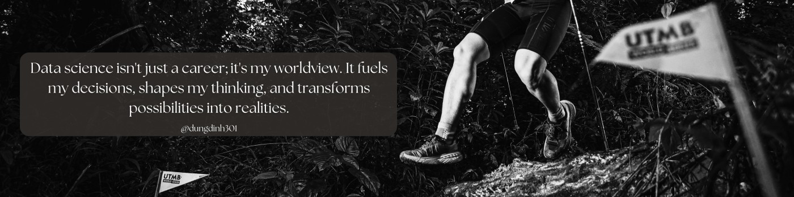

I build data-driven digital products.
Product Manager
“Life is either a daring adventure or nothing at all.”
— Helen Keller
Dự án
Sản phẩm & dự án
Những thứ tôi đã và đang dựng — từ phương pháp đến dashboard.